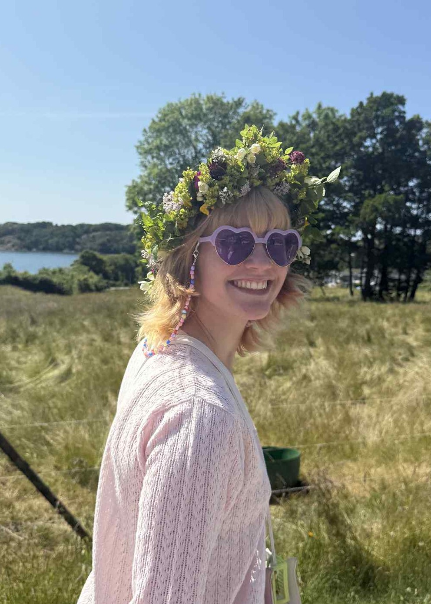

Vem är jag?

Linn Janson - 27år
Uppväxt på Orust
Fått Gesällbrev som modist
Utbildning:
2026-Pågående:
Webbutvecklare .NET på Campus Värnamo. 2årig YH-Utbildning på distans.
2022-2024:
Modist på Tillskärarakademin i Göteborg. 2årig YH-Utbildning.
2026:
Kurs i Programmering 1, via Komvux. Arbetade i Visual Studio med C#.
Kompetenser:
C# - HTML/CSS - Photoshop/Illustrator
Jag är utbildad modist och en kreativ person som älskar att arbeta med färg och form. Det jag trivs
bäst med att göra är
att experimentera och testa nya saker.
Inom modistyrket är problemlösning en stor del av skapandeprocessen och det är även en drivande
kraft inom mitt intresse
för programmering och Webbutveckling.
Att stöta på hinder och hitta nya och roliga lösningar
för att nå sitt mål, det är något av det bästa med att skapa.
Arbetserfarenheter
Tygavdelningen, Göksäter
2020-nutid (tjänsteledig)
Göksäter är en större butik med allt från kläder och leksaker till möbler och gardiner. Jag jobbar på tygavdelningen där jag klipper tyg, beställer sybehör, packar upp varor och svarar på kunders frågor och hjälper dom med deras projekt.